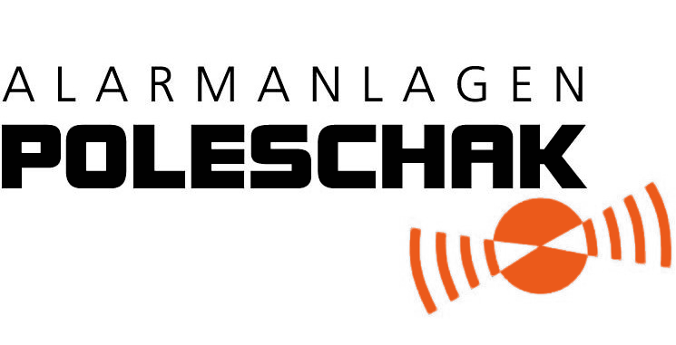
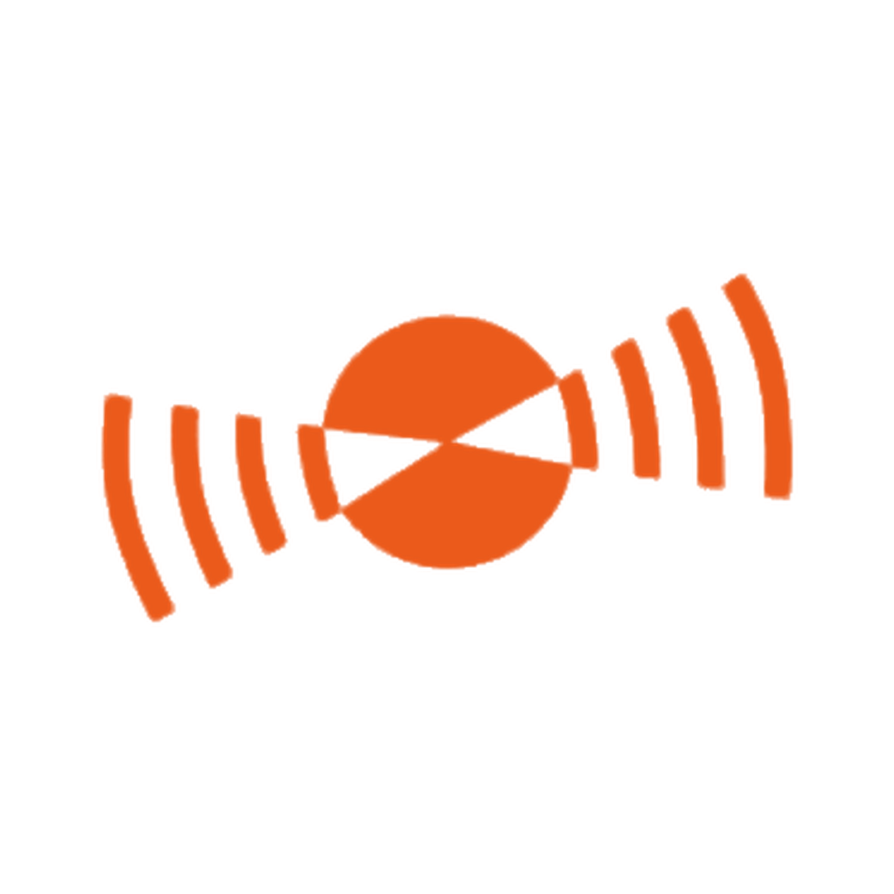
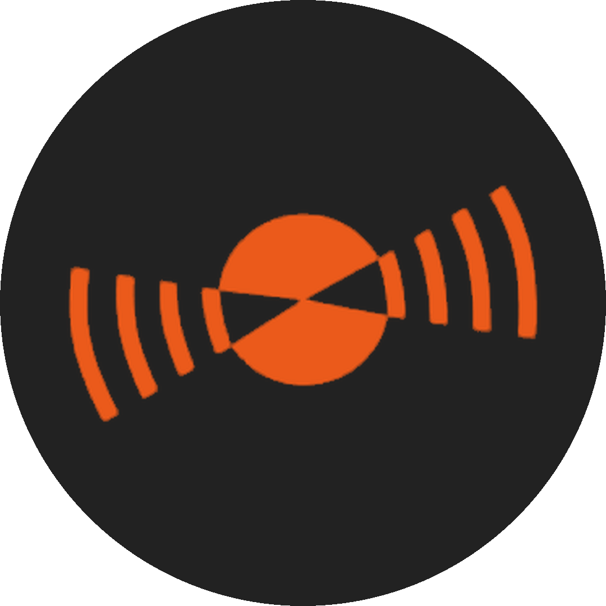

Aus der Leitstelle
03:12 Uhr.
Ein Alarm
geht ein.
Ein Alarm
geht ein.
Was in den nächsten Minuten passiert, in 4 Schritten →

Alarmanlagen Poleschak GmbH · Vorschlag für die Geschäftsführung · Oktober 2026

Original – auf Weiß und hellen Flächen
Negativ – auf Anthrazit, Schwarz und dunklen Fotos

Empfehlung
Weiß · wirkt hell & dunkel

Alternative
Anthrazit
Der Schriftzug ist im 110-px-Kreis von Instagram nicht lesbar. Das Signal-Symbol ist es und macht das Profil auf einen Blick wiedererkennbar.
Vorschau aus der Web-Grafik. Die Endfassung kommt aus der Vektordatei.
Orange ist das Signal: Es markiert das Wichtigste, nie alles.
| Orange auf Anthrazit | 4,6 : 1 · Text ✔ |
| Schwarz auf Orange | 6,0 : 1 · Text ✔ |
| Weiß auf Orange | 3,5 : 1 · nur große, fette Schrift |
| Orange hell auf Weiß | 2,4 : 1 · nie für Text ✘ |
CMYK-Werte sind Näherungen. Für Druckprodukte (Plakat) vom Drucker proofen lassen.
03| Headline | 88–110 px |
| Subline | 44–52 px |
| Fließtext | mind. 34 px |
| Kicker | 26–30 px |
Als Rahmen, Eckdekor oder animierter Übergang in Reels („Alarm geht los“).
Aufzählungszeichen und „Live“-Marker. Der kleinste Wiedererkennungswert.
Kurzer orangener Balken unter jeder Headline. Er zieht sich durch alle Vorlagen.
Dunkler Verlauf mit orangem Schein: die Stimmung der Leitstelle bei Nacht.
Linien-Icons, 2 px Strich, runde Enden, Weiß oder Orange
Kunden · Leitstelle · Einsätze
dunkel + Orange
Tipps · Mythen · Zahlen · Förderung
hell + Orange
Azubis · Fachkräfte · Team
Orange + Schwarz
Interaktiv: Umfrage, Quiz,
Fragen
Ruhig statt panisch · Fakten statt Angstmache · nahbar und regional · Humor bei Team & Karriere · „du“ auf Instagram, Sie in DMs spiegeln
Faustregel: Könnte ein Einbrecher aus dem Bild etwas lernen? Dann wird es nicht gepostet.
Über uns · Leitstelle · Karriere · Tipps · Kunden. So ist jede Zielgruppe mit einem Tipp am richtigen Ort.
WhatsApp als Haupt-Button: Das ist die niedrigste Hürde für Azubis und Kunden. Dazu Anrufen und Route.
Follower-Zahlen werden nach der Nullmessung eingetragen.